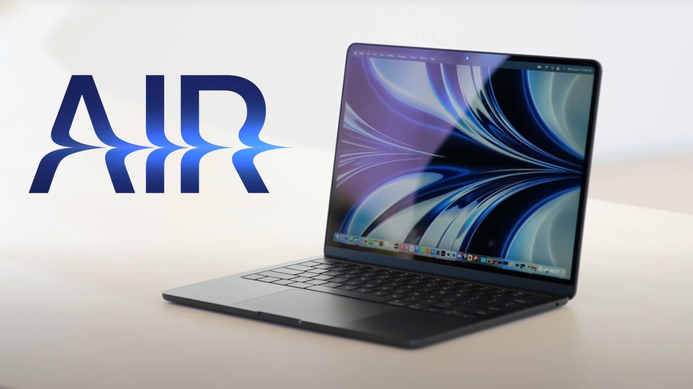

-
تکنولوژی

بلومبرگ: منتظر عرضه مک بوک ایر 2022 در رنگهای متنوع نباشید
مدتهاست منتظر معرفی مک بوک ایر 2022 هستیم و تا به امروز شایعات زیادی درباره آن منتشر شده که یکی از آنها، عرضه این محصول در رنگهای متنوع مشابه آیمک است. اما حالا «مارک گورمن»، ...
مدتهاست منتظر معرفی مک بوک ایر 2022 هستیم و تا به امروز شایعات زیادی درباره آن منتشر شده که یکی از آنها، عرضه این محصول در رنگهای متنوع مشابه آیمک است. اما حالا «مارک گورمن»، خبرنگار بلومبرگ چنین موضوعی را زیرسوال برده و گفته این محصول با رنگهای یکسان با نسل قبلیاش از راه میرسد.
مک بوک ایر جدید با تفاوتهای زیادی نسبت به نسل قبلیاش روانه بازار خواهد شد و شایعات یکی از این تفاوتها را رنگهای متنوع و جذاب عنوان میکنند، اما گورمن در توییت اخیرش حرف دیگری زده است.

عرضه مک بوک ایر 2022 در سه رنگ
به گفته گورمن، ایده عرضه نسل بعدی مک بوک ایر در رنگهای متنوع احتمالا اغراقآمیز است. گورمن میگوید نسل کنونی این لپتاپ در رنگهای خاکستری فضایی، نقرهای و طلایی در بازار حضور دارند و انتظار ندارد که برای نسل بعدی رنگ جدیدی به آنها اضافه شود. البته گورمن گفته این محصول در رنگ موردعلاقهاش برای آیمک یعنی آبی هم موجود خواهد بود.
با وجود گفته گورمن، تحلیلگر مطرح محصولات اپل یعنی «مینگ-چی کو» چند وقت پیش گفته بود که مک بوک ایر جدید در رنگهای بیشتری روانه بازار میشود، هرچند جزئیات بیشتری در این زمینه منتشر نکرد. علاوه بر این، شایعات شواهد محکمی برای ادعای خود مبنی بر عرضه مک بوک ایر جدید در رنگهای متنوع ارائه نکردهاند.
اگرچه شاید رنگ جدیدی برای مک بوک ایر 2022 در کار نباشد، اما مسلما با طراحی تازهای روبهرو میشویم و این طراحی مشابه مک بوک پرو خواهد بود. همچنین حاشیههای اطراف نمایشگر کاهش مییابد و احتمالا با یک ناچ هم در بالای آن روبهرو میشویم.
یکی دیگر از تغییرات مورد انتظار برای این محصول، استفاده از تراشه جدید M2 است که اگرچه نسبت به M1 عملکرد بهتری دارد، اما انتظار نمیرود در برابر مدلهای پیشرفتهتر M1 مانند پرو و مکس حرف زیادی برای گفتن داشته باشد. در نهایت به احتمال زیاد در کنفرانس WWDC 2022 که دوشنبه همین هفته برگزار میشود، با مک بوک ایر جدید روبهرو خواهیم شد.